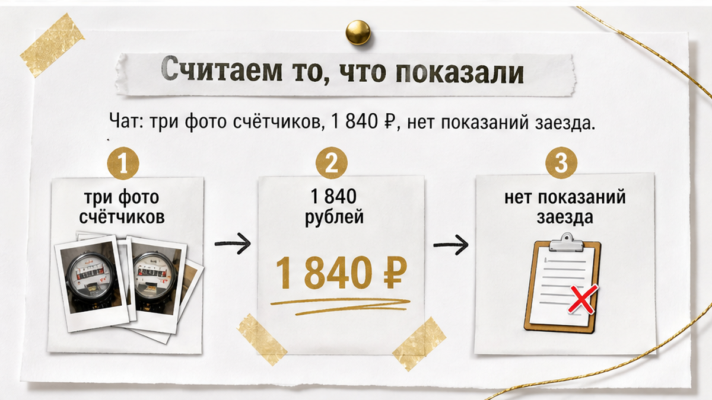
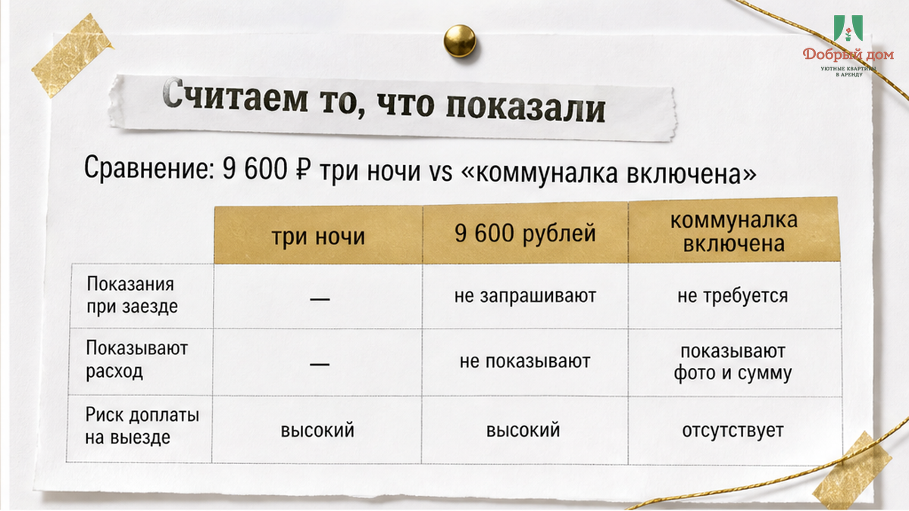
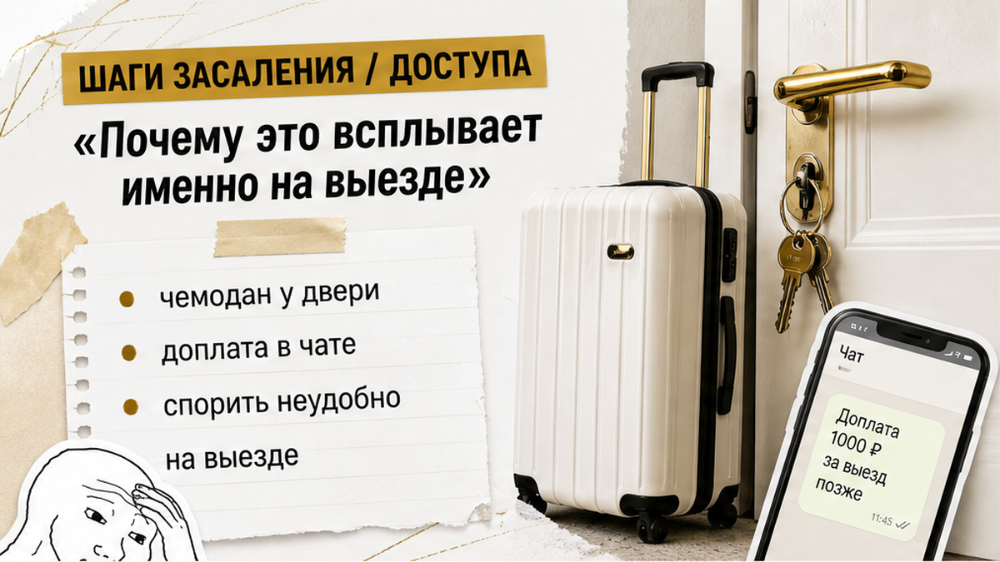
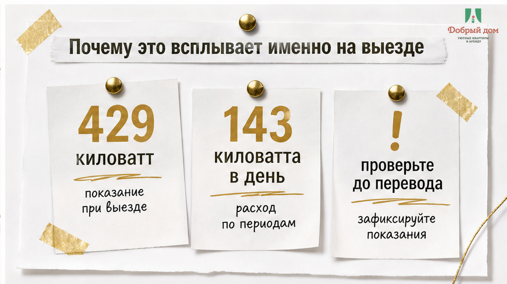
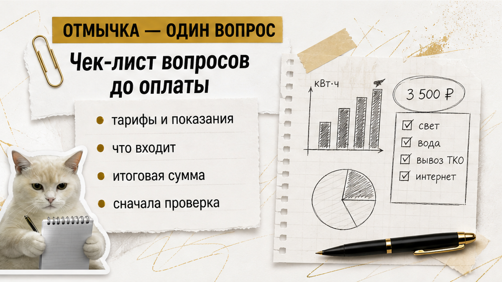
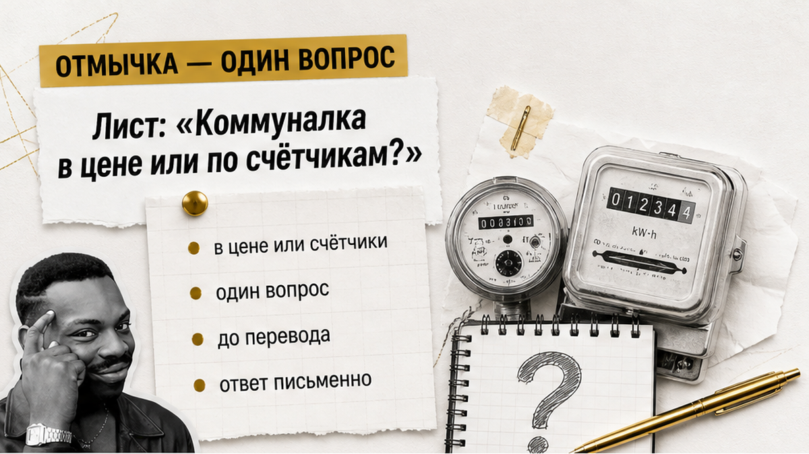
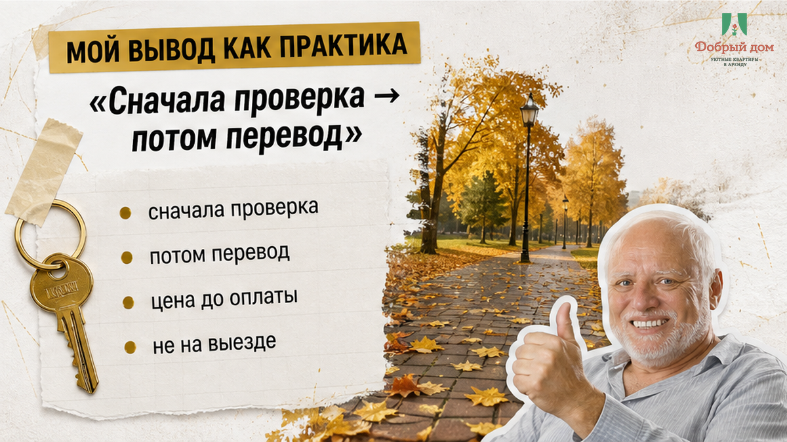

«Это по факту расхода — свет, вода, стиралка». В чате — три фотографии счётчиков. Под ними сумма: 1 840 ₽.
Гость снял однушку в Тюмени на три ночи, перевёл около 9 600 ₽ — по 3 200 ₽ за ночь. В карточке было написано чёрным по белому: «коммуналка включена». Не «частично включена». Не «свет отдельно». Не «по приборам учёта». Включена.
Три ночи прошли обычно: свет вечером, душ утром, чайник, телевизор фоном, зарядки для телефонов. Никакого производственного цеха в квартире не случилось. А на выезде, когда чемодан уже стоял у двери, пришли фото приборов учёта и просьба «добить по факту».
И вот что здесь главное. Гость не видел показания при заселении. Их не фотографировали вместе. В переписке не было: «Начинаем считать отсюда». Ему просто показали конечные цифры и предложили поверить, что вся разница — его расход.
А человеку через час в дорогу. Спорить неудобно. Проверять уже нечего. И сделка, которую вроде бы закрыли переводом, внезапно открывается второй раз — только на выезде и по чужим правилам.
Я хост посуточной в Тюмени. Это «Добрый дом».
Telegram · MAX
Такие истории нам присылают регулярно. Почти всегда схема одна: до перевода обещают одно, после проживания появляется другое. Слово «включено» звучит легко, пока не превращается в счётчик и срочную доплату.


Разберём цифру без эмоций. На фото электросчётчика — 12 847. Хост говорит: при заезде было 12 418. Разница — 429 кВт·ч. При тарифе 4,29 ₽ за кВт·ч получается примерно 1 841 ₽. Формально сумма сходится почти рубль в рубль.
Но дальше надо не кивать на калькулятор, а смотреть на сам расход. 429 кВт·ч за три ночи — это около 143 кВт·ч в сутки. Для обычной однушки с чайником, светом, душем и телевизором цифра выглядит не как обычное проживание. Это уже история про постоянно работающие мощные приборы, а не про гостя, который приехал переночевать.
В этой же логике вода. Для обычных трёх ночей речь идёт о 25–55 кВт·ч электричества и 0,4–1,0 м³ воды. По указанным ставкам холодная вода — 51,89 ₽ за куб, водоотведение — 38,04 ₽. Вместе около 89,93 ₽ за куб. Вся коммуналка такого проживания — ориентировочно 150–320 ₽, а не 1 840 ₽.
Откуда берётся разница? Очень просто: нет стартовой точки. Не зафиксировали показания при заезде — значит, в расчёт можно положить хоть предыдущий месяц жизни квартиры. И гость не сможет проверить, где его расход, а где чужой.
Здесь нормальная фраза одна: «Нет. Так не считаем». Без скандала, без ярлыков. Покажите стартовые показания, которые зафиксировали при заселении. Покажите тариф. Покажите, как получилась дельта. Если базовой цифры нет, то считать, по сути, не из чего.


Потому что на выезде у гостя меньше всего свободы. До оплаты можно открыть несколько карточек, сравнить районы, цену, условия. После трёх ночей — вещи собраны, ключи надо сдавать, машина или поезд ждать не будут. Две тысячи в такой момент часто платят не потому, что согласны, а потому что хотят закончить разговор.
Такое уже бывает в разных обёртках. Например, когда хозяин сказал «всё включено», а за такси доплатили 2 400 ₽. Или когда залог перевели заранее, а на выезде сказали, что не вернут. Бывает и так: в объявлении обещают комфорт, а по факту в ванной один мокрый коврик. Или цена меняется у двери: оплатил за двоих, а просят доплату за третьего.
Во всех случаях проблема не в самом платеже. Доплаты иногда бывают честными. Проблема в моменте, когда о них говорят. Условие до бронирования — это выбор гостя. Условие на пороге — это уже давление обстоятельств.
И важная оговорка. Считать коммунальные услуги по приборам учёта можно. При долгом проживании это нормальная схема, если она прозрачна: в договоре это написано, тарифы известны, стартовые показатели сняты вместе, итог можно проверить. Тогда человек понимает, на что соглашается.
Но если до перевода написано «включено», а после появляется «по факту», это уже не прозрачный расчёт. Это смена условий задним числом.
А вы что выберете: спросить заранее или спорить с фотографиями счётчика на выезде? Напишите нам в Telegram или MAX. Такие ситуации лучше разбирать до того, как отправили деньги.


Коммуналка в цене или по счётчикам?
Один вопрос вскрывает объявление быстрее длинного чек-листа. Если ответ: «В цене», попросите написать это прямо в чате до перевода. Одной строкой. Если ответ: «По счётчикам», сразу уточняйте три вещи: какие тарифы, от каких показаний считают и кто фиксирует стартовые цифры при заезде.
Честный хост не будет от этого вопроса прятаться. Он объяснит условия, покажет приборы, продублирует договорённость. Если вместо ответа слышите «да там копейки», «обычно никто не спрашивает», «потом разберёмся» — это не ответ. Это попытка оставить цену открытой.
Нет. Так не заселяем.
Фраза «коммуналка включена» не должна после трёх ночей внезапно означать «включена не вся». Гость обязан понимать итоговую сумму до перевода. Не когда уже сдал ключи. Не когда в чате прилетели фото. Не когда неудобно отказаться.

В посуточной аренде большинство конфликтов рождается не из суммы, а из времени. Одна и та же тысяча рублей до оплаты — условие. Та же тысяча на выезде — претензия. В первом случае гость может выбрать другую квартиру. Во втором его ставят перед фактом.
Перед переводом проверьте коротко:
Сначала проверка. Потом перевод. Не наоборот.
Нужна квартира в Тюмени с понятной ценой до оплаты?
Telegram: https://t.me/Dobriy_dom_72
MAX: https://max.ru/id660300569233_biz
Бронирование: https://добрыйдом-72.рф/booking/
Сайт: добрыйдом-72.рф
Телефон: +7 (993) 574-83-22
Менеджер: https://t.me/Dobriy_dom_Tyumen